- Módulo: Sistemas Operativos
- Título del trabajo Generación de usuarios masivos
- Componentes del grupo: Eliot Farrais García
- Curso Académico: 2014/2015
- Fecha de entrega: 27 de febrero de 2015
Nos descargamos de la página oficial gwak y lo instalamos
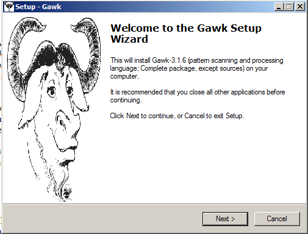En la instalación elegimos Full installation
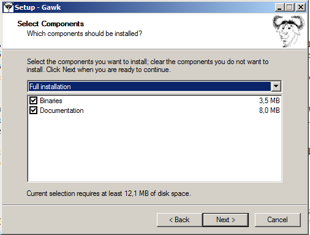Luego Seleccionamos Download Sources
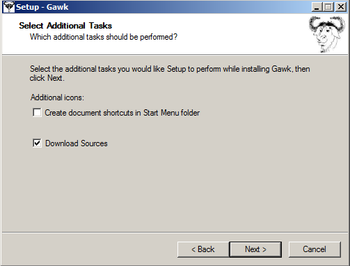Metemos dentro de la variable PATH del sistema el directorio de instalación de Awk

Es un script que nos permite, ver, modificar y eliminar permisos NTFS en Windows
Descargamos el Script desde: http://download.microsoft.com/download/f/7/8/f786aaf3a37b45abb0a28c8c18bbf483/XCacls_Installer.exe y lo abrimos
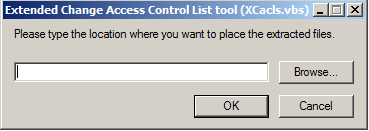Buscamos la función IsOsSupported y la modificamos
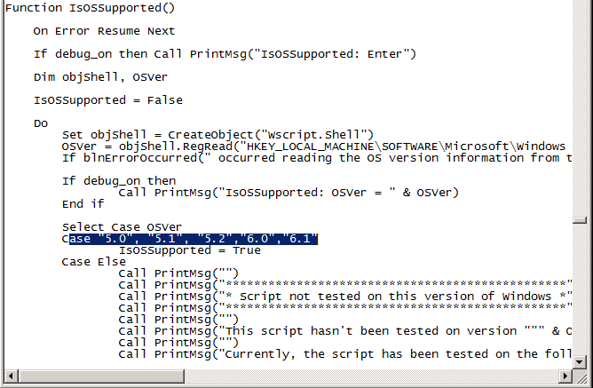Cambiaremos el motor de secuencias de comandos predeterminado de WScript a CScript
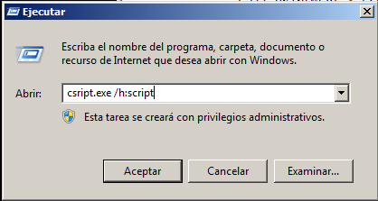Creamos el fichero CSV, creandolo a mano. Este mismo contiene cuatro campos: nombre;apellido1;apellido2;grupo
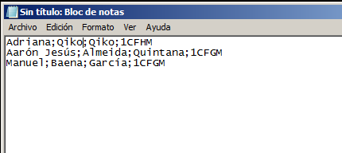Creamos el Script alta.awk
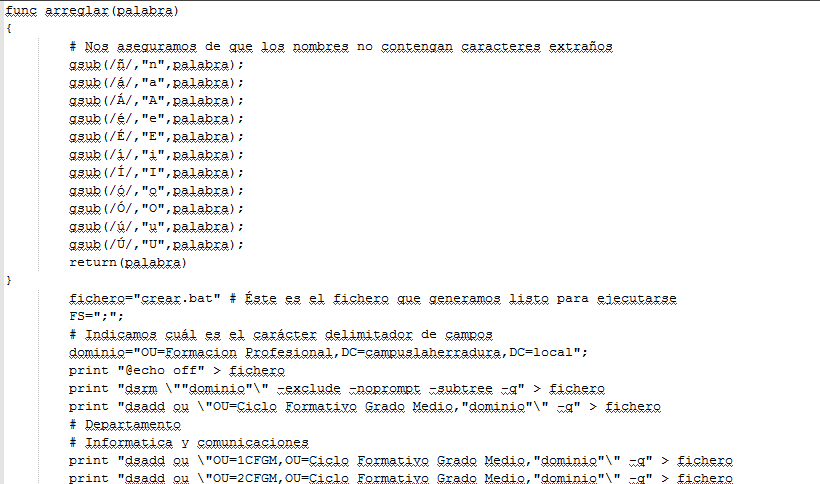Se nos generael sigiente archivo .bat
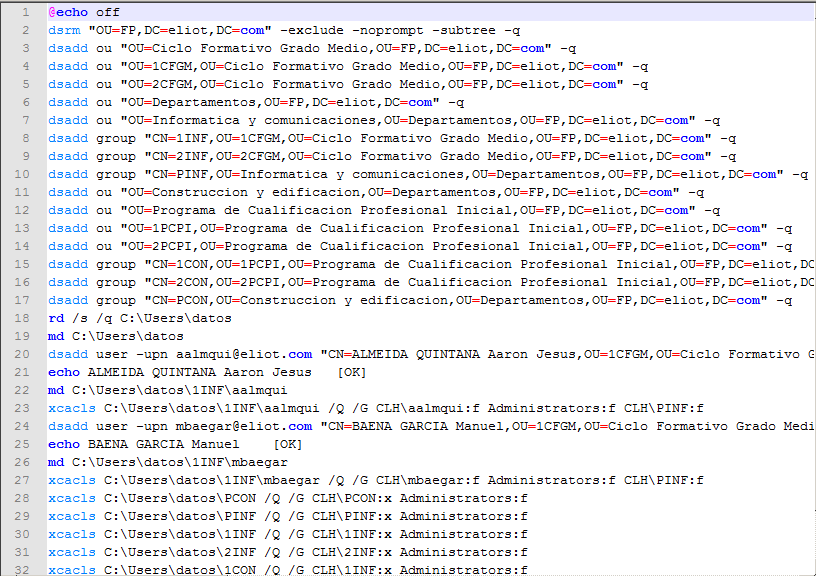Comprobamos el resultado, mirando dentro de la unidad organizativa FP., lo que se ha creado
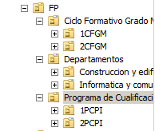Comprobamos que se han creado los usuarios dentro de 1CFGM
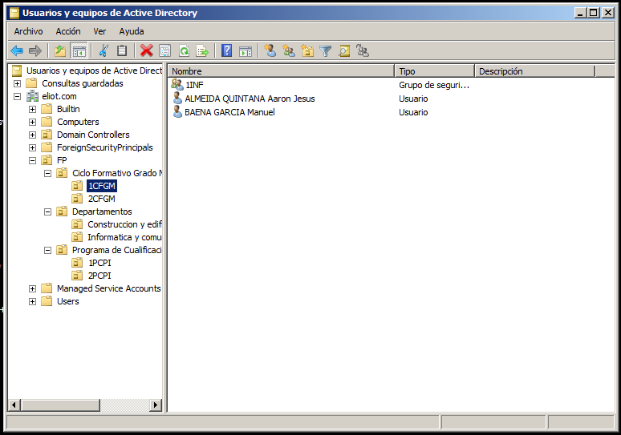Comprobamos que se han creado los usuarios dentro de 2CFGM
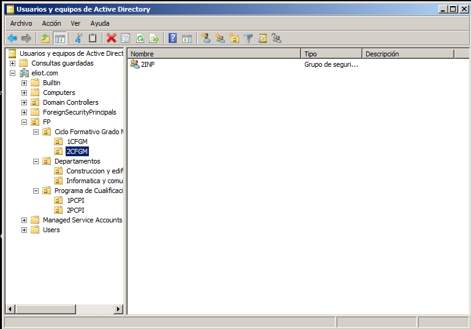Miramos las carpetas creadas por el sistema